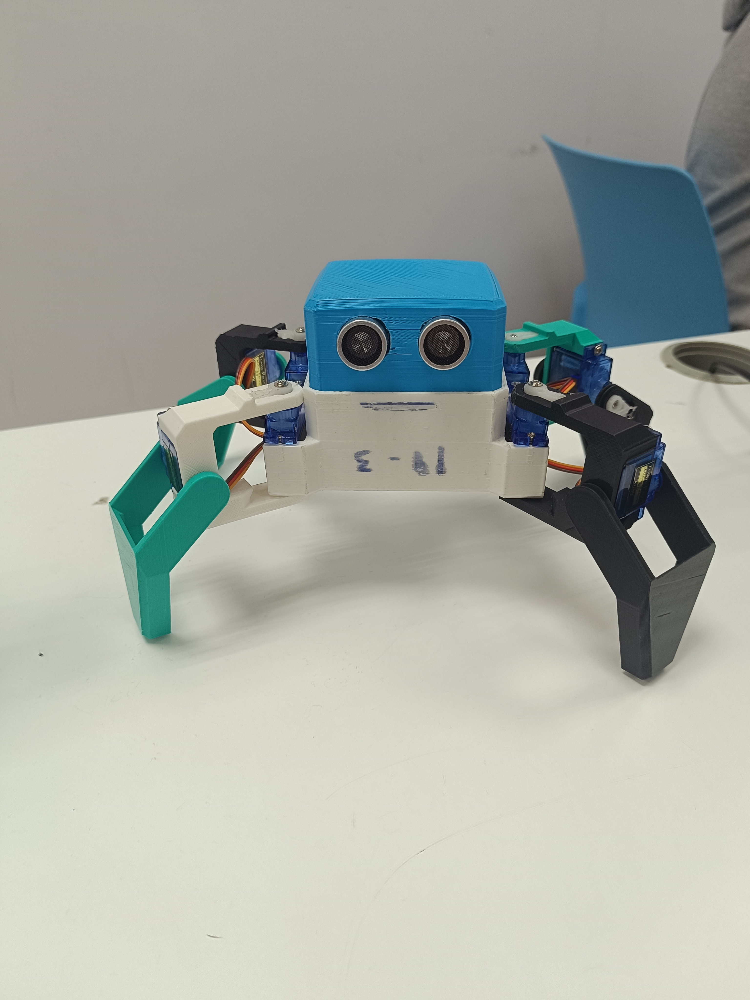

PROMOTION
🌈Welcome to the future with Arelux Robotika!🌈
At Arelux Robotika, we take technology beyond the conventional. We don’t just create robots… We design smart solutions that transform the way you work, learn, and grow. We are the bridge between imagination and advanced technology, developing robotic solutions that propel industries, education, and startups into the future.
- Smart Automation: Optimize industrial and business processes with robotic systems that reduce costs, increase efficiency, and eliminate human error.
- Educational and Business Robots: Programs designed for schools, academies, and students who want to master the future: programming, electronics, and logical thinking from beginner to advanced levels.
- Custom Technology Solutions: We create robots tailored to your company’s needs—from robotic arms to autonomous systems.
- Innovation That Drives Your Growth: We connect your systems with AI, IoT, and machine learning to take your business to the next level.
- Consulting and Development: We guide you from concept to implementation, ensuring real and measurable results.
Why choose Arelux?
- Constant innovation
- Modern and functional design
- Reliable technology
- Creative and strategic approach
💡 Strategic approach
We analyze every project from the ground up to design robotic solutions that truly solve problems, not just “look good.”
🤝 Comprehensive Support
From the initial idea through implementation and ongoing maintenance.
🥀 ARELUX IS MORE THAN JUST ROBOTICS
It’s creativity, innovation, and technology working together to build smart solutions that make a difference.
Technology with creativity, precision, and style. Because the future isn’t something you wait for… It’s something you build!
-Take the next step with Arelux Robotika 🌸
TikTok: arelux.robotica
DOCUMENTATION
We began the project by assembling the robots, specifically the spider and the Otto robot. This step is important because it helps us better understand how they work and how they are constructed. It has also helped us become familiar with the parts and learn how to use the tools.
During this phase, we were able to familiarize ourselves with the parts, tools, and structures of each robot, as well as begin to understand how they are designed and how they function at a basic level.
With the Otto robot: we’ve encountered several issues. The main problem is that some parts are missing, so we haven’t been able to finish assembling it. This has prevented us from making good progress on the assembly. Additionally, some parts didn’t fit properly, which caused us to waste time trying to position them correctly. In summary, the biggest problem has been missing parts. We had to take it apart again to check the motors and install the 360-degree motors on the wheel assembly.
With the spider: we didn’t have too many problems because we had all the parts. Even so, the assembly wasn’t easy. Some parts are a bit tricky to fit together, and the screws are hard to get into place. We had to work carefully and patiently to avoid making mistakes. To check whether the motors were 180-degree or 360-degree, we had to take it apart and put it back together again. After that, we programmed it to move the legs, and coordinating them will be very difficult. When we tried moving one leg, it broke, so we had to find another one and reattach it; luckily, there was a spare in one of the groups.

We started with the line-following code, but we ran into problems such as: The ports aren’t working, and there are also errors in the code.
Company logo:
Next, we started configuring the Wi-Fi. To do this, we first had to reset the router, since it wouldn’t let us access the previous settings properly. Then we logged into the router’s admin panel to change the network name and set a more secure password using WPA2 encryption. We also configured automatic IP assignment so that devices could connect without issues and verified that the signal would reach all devices correctly.
During the process, we encountered several issues, such as problems connecting some devices because the password was entered incorrectly, and instances where the network appeared to be unavailable. In addition, we had to check the wiring and restart the router several times to ensure that the settings were saved correctly. We finally got the network up and running stably and securely, verifying that all devices had proper internet access.